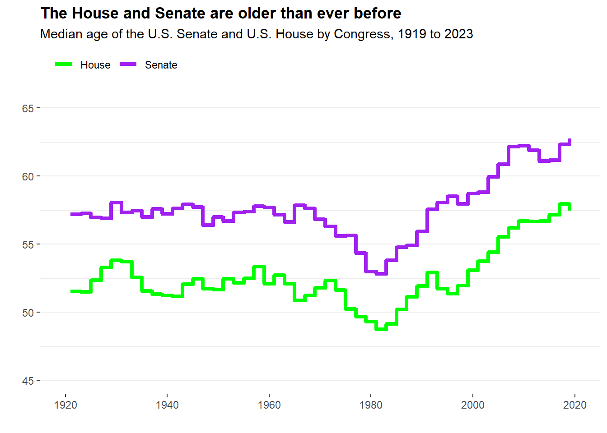

# Load necessary libraries
# library(dplyr)
# library(ggplot2)
# Calculate average age for each year
#avg_age <- congress %>%
# group_by(Year, chamber) %>%
# summarise(avg_age_years = mean(age_years, na.rm = TRUE))
# Plot the data
#ggplot(avg_age, aes(x = Year, y = avg_age_years, color = chamber)) +
# geom_line() +
# labs(title = "The House and Senate are older than ever before",
# subtitle = "Average age of the U.S. Senate and U.S. House by Congress, 1919 to 2023",
# x = "Year",
# y = "Average Age",
# color = "Chamber") +
# theme_bw()Presentation Exercise
For this exercise, we will be recreating a figure found on the FiveThirtyEight website about data detailing how Congress members are older on average than ever before. We’ll use the ggplot package and some help from Microsoft Copilot’s Precise Mode to generate the base code.
I entered this prompt to get this first output that I modified to load the actual dataset:
“I would like to use R to recreate the figure titled”The House and Senate are older than ever before Median age of the U.S. Senate and U.S. House by Congress, 1919 to 2023” found at this link: https://fivethirtyeight.com/features/aging-congress-boomers/. Can you give me code to reproduce that exact figure? The data is open access and available here: https://data.fivethirtyeight.com/. It is under the section “Congress Today Is Older Than It’s Ever Been” from April 2, 2023.”
I also entered this prompt for the line that adds the column “Year” to the set: “The dataset doesn’t have a column for”Year”, but instead records the time period in a column named “congress” which is defined as follows: The number of the Congress that this member’s row refers to. For example, 118 indicates the member served in the 118th Congress (2023-2025). How do I go from this raw format to the one in their figure?” As well as this prompt: “Is there a way I can modify the plot to just show the average ages for each year? The variable”age_years” in the dataset doesn’t do this; it only lists the age for each member in the set.”
Here is the AI output (made into annotations to prevent loading/error messages) after all of these prompts:
And everything past here is the manually modified code:
#load packages
library(ggplot2)
library(here)Warning: package 'here' was built under R version 4.3.2here() starts at D:/MADA/kevinkosewick-MADA-portfoliolibrary(dplyr)
Attaching package: 'dplyr'The following objects are masked from 'package:stats':
filter, lagThe following objects are masked from 'package:base':
intersect, setdiff, setequal, union# Replace 'path_to_file' with the path to your downloaded file
congress <- read.csv(here("presentation-exercise", "congress-demographics", "data_aging_congress.csv"))
#Check the data
head(congress) congress start_date chamber state_abbrev party_code bioname
1 82 1951-01-03 House ND 200 AANDAHL, Fred George
2 80 1947-01-03 House VA 100 ABBITT, Watkins Moorman
3 81 1949-01-03 House VA 100 ABBITT, Watkins Moorman
4 82 1951-01-03 House VA 100 ABBITT, Watkins Moorman
5 83 1953-01-03 House VA 100 ABBITT, Watkins Moorman
6 84 1955-01-03 House VA 100 ABBITT, Watkins Moorman
bioguide_id birthday cmltv_cong cmltv_chamber age_days age_years generation
1 A000001 1897-04-09 1 1 19626 53.73306 Lost
2 A000002 1908-05-21 1 1 14106 38.62012 Greatest
3 A000002 1908-05-21 2 2 14837 40.62149 Greatest
4 A000002 1908-05-21 3 3 15567 42.62012 Greatest
5 A000002 1908-05-21 4 4 16298 44.62149 Greatest
6 A000002 1908-05-21 5 5 17028 46.62012 Greatest# Add a Year column to the data frame. 1787 is the first period of Congress with new ones every 2 years, so this calculation makes the "congress" column easier to visualize.
congress$Year <- 1787 + 2 * congress$congress
#Calculate the average age for each year in the dataset
avg_age <- congress %>%
group_by(Year, chamber) %>%
summarise(avg_age_years = mean(age_years, na.rm = TRUE))`summarise()` has grouped output by 'Year'. You can override using the
`.groups` argument.Now we can create the plot:
# Plot the data
ggplot(avg_age, aes(x = Year, y = avg_age_years, color = chamber)) +
geom_line() +
labs(title = "The House and Senate are older than ever before",
subtitle = "Average age of the U.S. Senate and U.S. House by Congress, 1919 to 2023",
x = "Year",
y = "Average Age",
color = "Chamber") +
theme_minimal()This is very close to the original. We’ll now just modify the x and y axes to have the same increments in time as the original and change the colors of the lines. We’ll also make the lines thicker and remove the gridlines.
#modify the axis increments and the colors of the lines. Remove gridlines and thicken lines.
ggplot(avg_age, aes(x = Year, y = avg_age_years, color = chamber)) +
geom_line(linewidth = 1.5) +
labs(title = "The House and Senate are older than ever before",
subtitle = "Average age of the U.S. Senate and U.S. House by Congress, 1919 to 2023",
x = "Year",
y = "Average Age",
color = "Chamber") +
scale_x_continuous(breaks = seq(1920, 2020, by = 10), limits = c(1920, 2020)) +
scale_y_continuous(breaks = seq(45, 65, by = 5), limits = c(45, 65)) +
scale_color_manual(values = c("Senate" = "purple", "House" = "green")) +
theme_bw() +
theme(panel.grid.minor = element_blank())Warning: Removed 6 rows containing missing values (`geom_line()`).
This looks extremely close to the original. R is a very useful tool for creating and reproducing visualizations. Here’s the original figure for comparison:
For the next part of this exercise, we’ll create table with the same data shown in the plot. To begin, I gave Microsoft Copilot Precise Mode this prompt: “Now I would like to make a table that displays the information shown in the plot in a visually pleasing way. You can pick the R package used. What would the code look like for this?”
# Load the required package
library(knitr)
library(kableExtra)Warning: package 'kableExtra' was built under R version 4.3.2
Attaching package: 'kableExtra'The following object is masked from 'package:dplyr':
group_rows# Create the table
kable(avg_age, caption = "Average age of the U.S. Senate and U.S. House by Congress, 1919 to 2023") %>%
kable_styling("striped", full_width = F)| Year | chamber | avg_age_years |
|---|---|---|
| 1919 | House | 50.63485 |
| 1919 | Senate | 56.71305 |
| 1921 | House | 51.51950 |
| 1921 | Senate | 57.19329 |
| 1923 | House | 51.50112 |
| 1923 | Senate | 57.26109 |
| 1925 | House | 52.35196 |
| 1925 | Senate | 56.95630 |
| 1927 | House | 53.28969 |
| 1927 | Senate | 56.88502 |
| 1929 | House | 53.80848 |
| 1929 | Senate | 58.03901 |
| 1931 | House | 53.71394 |
| 1931 | Senate | 57.30885 |
| 1933 | House | 52.54248 |
| 1933 | Senate | 57.46966 |
| 1935 | House | 51.56923 |
| 1935 | Senate | 56.98198 |
| 1937 | House | 51.33543 |
| 1937 | Senate | 57.57079 |
| 1939 | House | 51.24558 |
| 1939 | Senate | 57.21297 |
| 1941 | House | 51.17905 |
| 1941 | Senate | 57.60996 |
| 1943 | House | 52.07287 |
| 1943 | Senate | 57.91862 |
| 1945 | House | 52.45802 |
| 1945 | Senate | 57.70944 |
| 1947 | House | 51.73979 |
| 1947 | Senate | 56.40930 |
| 1949 | House | 51.65482 |
| 1949 | Senate | 56.99059 |
| 1951 | House | 52.45117 |
| 1951 | Senate | 56.68717 |
| 1953 | House | 52.16560 |
| 1953 | Senate | 57.30762 |
| 1955 | House | 52.48055 |
| 1955 | Senate | 57.37286 |
| 1957 | House | 53.36413 |
| 1957 | Senate | 57.79469 |
| 1959 | House | 52.10761 |
| 1959 | Senate | 57.68167 |
| 1961 | House | 52.73533 |
| 1961 | Senate | 57.16725 |
| 1963 | House | 52.09492 |
| 1963 | Senate | 56.61896 |
| 1965 | House | 50.88059 |
| 1965 | Senate | 57.85668 |
| 1967 | House | 51.22730 |
| 1967 | Senate | 57.61036 |
| 1969 | House | 51.78546 |
| 1969 | Senate | 56.83123 |
| 1971 | House | 52.32744 |
| 1971 | Senate | 56.28458 |
| 1973 | House | 51.64166 |
| 1973 | Senate | 55.60350 |
| 1975 | House | 50.24058 |
| 1975 | Senate | 55.64103 |
| 1977 | House | 49.67102 |
| 1977 | Senate | 54.33374 |
| 1979 | House | 49.30329 |
| 1979 | Senate | 52.97910 |
| 1981 | House | 48.75481 |
| 1981 | Senate | 52.82680 |
| 1983 | House | 49.15492 |
| 1983 | Senate | 53.80838 |
| 1985 | House | 50.19013 |
| 1985 | Senate | 54.78347 |
| 1987 | House | 51.14722 |
| 1987 | Senate | 54.90860 |
| 1989 | House | 51.93884 |
| 1989 | Senate | 55.91800 |
| 1991 | House | 52.93039 |
| 1991 | Senate | 57.56222 |
| 1993 | House | 51.73735 |
| 1993 | Senate | 58.04549 |
| 1995 | House | 51.35202 |
| 1995 | Senate | 58.52094 |
| 1997 | House | 51.97229 |
| 1997 | Senate | 57.96277 |
| 1999 | House | 53.07509 |
| 1999 | Senate | 58.70057 |
| 2001 | House | 53.75171 |
| 2001 | Senate | 58.81935 |
| 2003 | House | 54.40583 |
| 2003 | Senate | 59.92630 |
| 2005 | House | 55.53191 |
| 2005 | Senate | 60.85637 |
| 2007 | House | 56.19800 |
| 2007 | Senate | 62.16361 |
| 2009 | House | 56.70651 |
| 2009 | Senate | 62.20867 |
| 2011 | House | 56.65312 |
| 2011 | Senate | 61.88345 |
| 2013 | House | 56.68415 |
| 2013 | Senate | 61.09670 |
| 2015 | House | 57.15462 |
| 2015 | Senate | 61.15650 |
| 2017 | House | 57.93973 |
| 2017 | Senate | 62.33103 |
| 2019 | House | 57.44181 |
| 2019 | Senate | 62.75417 |
| 2021 | House | 57.76279 |
| 2021 | Senate | 63.53330 |
| 2023 | House | 57.30675 |
| 2023 | Senate | 63.93180 |
This has too many rows and isn’t very visually appealing. I’ll try a different prompt: “Is there a different type of table you suggest to display a large dataset?”
# Load the required package
library(dplyr)
library(knitr)
# Create a new variable for the decade
avg_age$Decade <- 10 * floor(avg_age$Year / 10)
# Summarize the data
summary_data <- avg_age %>%
group_by(Decade, chamber) %>%
summarise(
Mean = mean(avg_age_years),
Min = min(avg_age_years),
Max = max(avg_age_years)
)`summarise()` has grouped output by 'Decade'. You can override using the
`.groups` argument.# Create the table
knitr::kable(summary_data, caption = "Summary of average age of the U.S. Senate and U.S. House by decade, 1919 to 2023")| Decade | chamber | Mean | Min | Max |
|---|---|---|---|---|
| 1910 | House | 50.63485 | 50.63485 | 50.63485 |
| 1910 | Senate | 56.71305 | 56.71305 | 56.71305 |
| 1920 | House | 52.49415 | 51.50112 | 53.80848 |
| 1920 | Senate | 57.26694 | 56.88502 | 58.03901 |
| 1930 | House | 52.08133 | 51.24558 | 53.71394 |
| 1930 | Senate | 57.30885 | 56.98198 | 57.57079 |
| 1940 | House | 51.82091 | 51.17905 | 52.45802 |
| 1940 | Senate | 57.32758 | 56.40930 | 57.91862 |
| 1950 | House | 52.51381 | 52.10761 | 53.36413 |
| 1950 | Senate | 57.36880 | 56.68717 | 57.79469 |
| 1960 | House | 51.74472 | 50.88059 | 52.73533 |
| 1960 | Senate | 57.21690 | 56.61896 | 57.85668 |
| 1970 | House | 50.63680 | 49.30329 | 52.32744 |
| 1970 | Senate | 54.96839 | 52.97910 | 56.28458 |
| 1980 | House | 50.23718 | 48.75481 | 51.93884 |
| 1980 | Senate | 54.44905 | 52.82680 | 55.91800 |
| 1990 | House | 52.21343 | 51.35202 | 53.07509 |
| 1990 | Senate | 58.15840 | 57.56222 | 58.70057 |
| 2000 | House | 55.31879 | 53.75171 | 56.70651 |
| 2000 | Senate | 60.79486 | 58.81935 | 62.20867 |
| 2010 | House | 57.17469 | 56.65312 | 57.93973 |
| 2010 | Senate | 61.84437 | 61.09670 | 62.75417 |
| 2020 | House | 57.53477 | 57.30675 | 57.76279 |
| 2020 | Senate | 63.73255 | 63.53330 | 63.93180 |
Much better, but it isn’t very stylistically pleasing. I’ll ask the AI one more prompt: “Can I stylise it to look more appealing?”
# Load the required package
library(gt)Warning: package 'gt' was built under R version 4.3.2# Create the table
summary_data %>%
gt() %>%
tab_header(
title = "Summary of average age of the U.S. Senate and U.S. House by decade, 1919 to 2023"
) %>%
cols_label(
Decade = "Decade",
chamber = "Chamber",
Mean = "Mean Age",
Min = "Minimum Age",
Max = "Maximum Age"
) %>%
fmt_number(
columns = c(Mean, Min, Max),
decimals = 2
) %>%
tab_options(
table.width = px(500),
table.font.size = px(12)
)| Summary of average age of the U.S. Senate and U.S. House by decade, 1919 to 2023 | |||
|---|---|---|---|
| Chamber | Mean Age | Minimum Age | Maximum Age |
| 1910 | |||
| House | 50.63 | 50.63 | 50.63 |
| Senate | 56.71 | 56.71 | 56.71 |
| 1920 | |||
| House | 52.49 | 51.50 | 53.81 |
| Senate | 57.27 | 56.89 | 58.04 |
| 1930 | |||
| House | 52.08 | 51.25 | 53.71 |
| Senate | 57.31 | 56.98 | 57.57 |
| 1940 | |||
| House | 51.82 | 51.18 | 52.46 |
| Senate | 57.33 | 56.41 | 57.92 |
| 1950 | |||
| House | 52.51 | 52.11 | 53.36 |
| Senate | 57.37 | 56.69 | 57.79 |
| 1960 | |||
| House | 51.74 | 50.88 | 52.74 |
| Senate | 57.22 | 56.62 | 57.86 |
| 1970 | |||
| House | 50.64 | 49.30 | 52.33 |
| Senate | 54.97 | 52.98 | 56.28 |
| 1980 | |||
| House | 50.24 | 48.75 | 51.94 |
| Senate | 54.45 | 52.83 | 55.92 |
| 1990 | |||
| House | 52.21 | 51.35 | 53.08 |
| Senate | 58.16 | 57.56 | 58.70 |
| 2000 | |||
| House | 55.32 | 53.75 | 56.71 |
| Senate | 60.79 | 58.82 | 62.21 |
| 2010 | |||
| House | 57.17 | 56.65 | 57.94 |
| Senate | 61.84 | 61.10 | 62.75 |
| 2020 | |||
| House | 57.53 | 57.31 | 57.76 |
| Senate | 63.73 | 63.53 | 63.93 |
This is a pretty good table overall and much easier to digest than the first one the AI spit out. Tables don’t seem to have as many options as figures when it comes to customization, but this is a good and quick way to visualize data and it gives more information than the plot did.